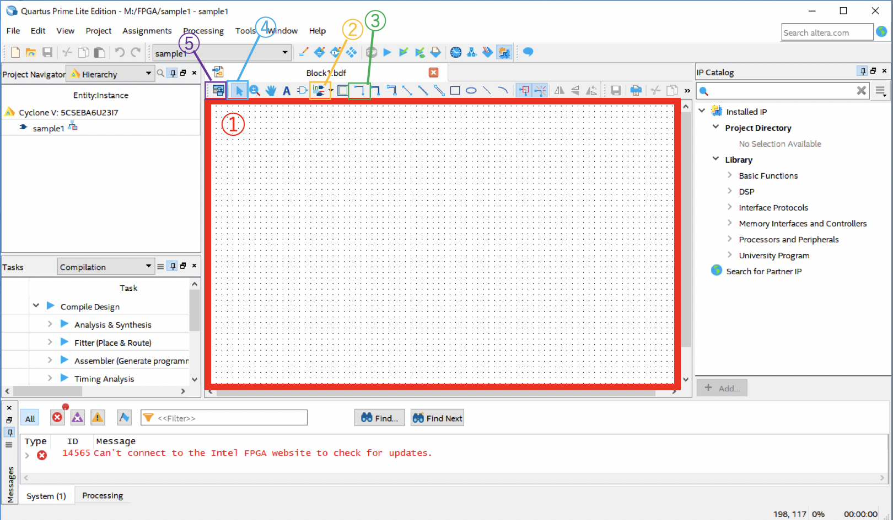
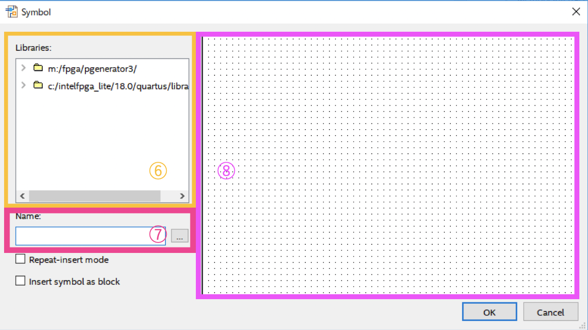

回路図作成に用いる操作
回路図を作成する際には1~5の操作を適宜用いる。
1.シンボルの呼び出し
①枠内をダブルクリックすると上の画像のメニューが表示される。
⑧枠内のフォルダを展開し、primitivesのlogicの中から呼び出したいシンボルを選択し呼び出す。
使用するシンボルが決まっている場合は、⑨枠内のNameから検索することもできる。
シンボルを選択すると⑩枠内に選択シンボルが表示されるのでOKを押し、CADの画面に戻ったらシンボルを置きたいところに左クリックで設置する。
なお、２つ以上設置する際、シンボルの周りの点線が互いに接してしまうと回路の動作に不具合が起きる可能性があるため、点線が互いに接しないように配置する必要がある。
入力・出力等については、②のアイコンから入力ならInput、出力ならOutputを選択し①枠内にシンボル同様に設置する。
2.配線・結線
(a)配線
配線はシンボルから線を引き、繋ぎたいシンボルに×のマークが到達したところで離すと配線される。 ③のアイコンからでも配線は可能である。
(b)結線
結線は電気的に交わらせたい際に用いる。線と線を交わらせた時、大きい丸が表示された際に離すと結線される。
3.移動
シンボルの移動は④のアイコンをONにした状態でシンボルをクリックしドラックすると移動できる。
4.フルスクリーン表示
⑤のアイコンをクリックするとフルスクリーン表示/解除ができる。
5.Rotate
回転させたいシンボルを選択し右クリックすると出てくるメニューからRotate by Degreesを選択し、回転させたい角度を選ぶとシンボルがその角度分回転する。
←back